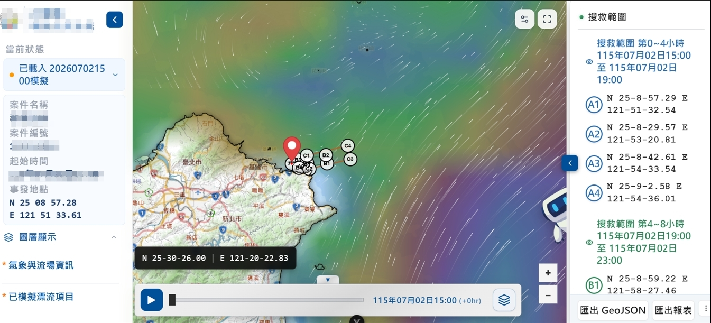
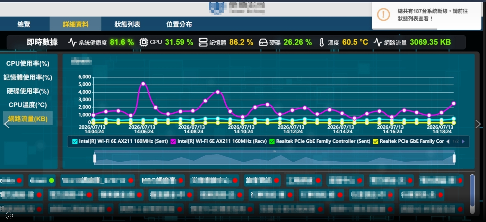
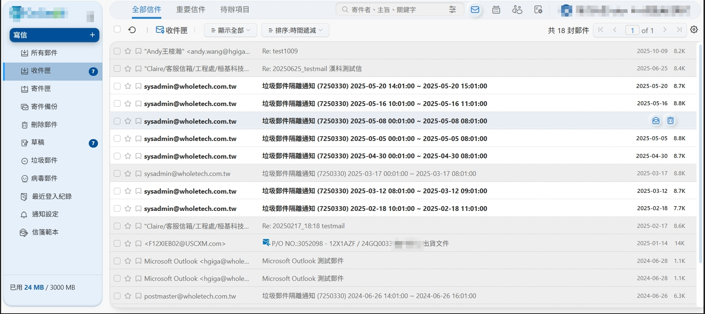
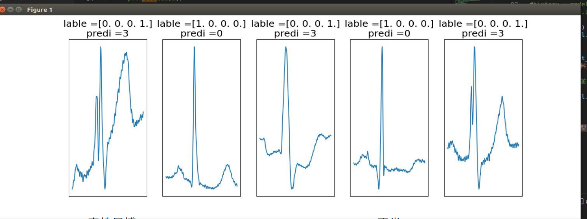
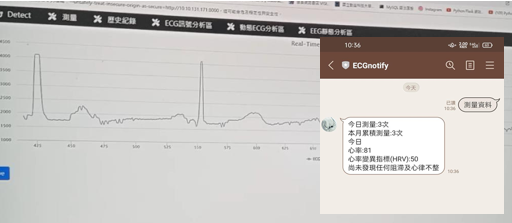
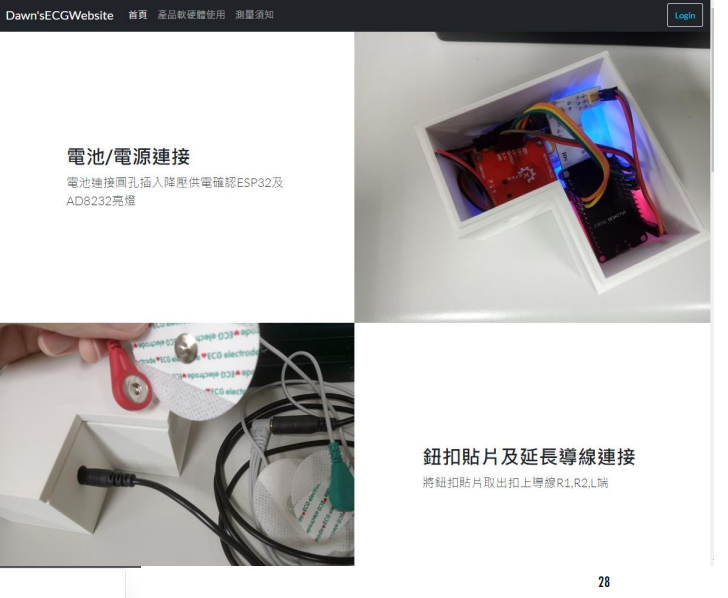
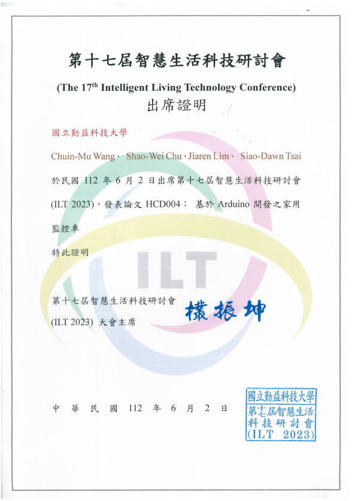
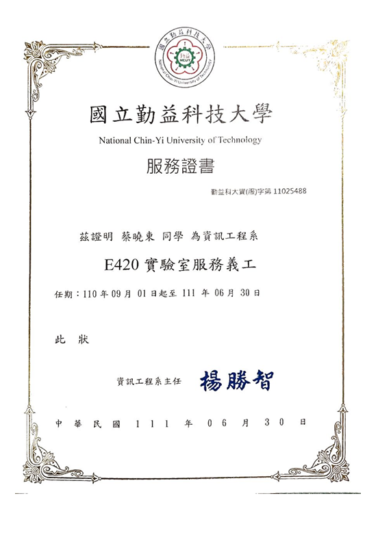

2023 年六月畢業於國立勤益科技大學資訊工程系，2024 年 2 月役畢後投入職場。
曾任桓基科技股份有限公司全端工程師，負責 EIP
產品介面效能優化、資安強化與後端 API 功能增新與優化；
目前轉職和瑩電腦股份有限公司從事多元接案，涵蓋搜救 GIS ( 無人機載具、海洋漂流模擬 )、台鐵機房監控及消防無線電等大型系統開發。
具備完整全端開發能力：前端熟練 Vue 3 / JavaScript，後端精通 PHP /
Python（Django、FastAPI），並持續研究AI
Agent、深度學習等技術融入現有系統，理解使用情境、協助客戶解決痛點。熱衷鑽研語言與新技術，善用工具高效協作，我以成為公司「即戰力」為自身定位目標。
- 行政院消防署國家搜救中心 x 三商電腦 WebGIS 平台開發，整合海流 / 氣象漂流軌跡預測模擬與即時圖資疊加。
- 支援搜救機、無人機（UAV）載具位置追蹤與任務調度介面。
- 消防指揮系統前後端功能開發，整合無線電通訊狀態監控。
- 台灣鐵路公司機房設備健康度監控平台建置，提供設備狀態儀表板與告警機制。
- 協助醫療單位伺服器基礎架構部署與維運支援（非應用層開發）。
- 協助客戶資訊安全稽核主機弱掃、網頁弱掃、滲透測試等資安項目。


- 負責衛福部各級醫院及群創光電廠區專案，伺服信箱、行事曆、雲端硬碟模組開發。
- Vue 3 前端：實作寫信區高度動態計算、vuedraggable + Vuex 拖曳交互、手機版滾動載入更多郵件。
- 新功能：SpeechSynthesis 朗讀，依 i18n 語系自動切換語音。
- 長庚大學宿舍網路 Mikrotik Router 權限控管設定。
- Webpack Lazy load（Vue / TinyMCE / PDF / FullCalendar）+ splitChunk 切模組 + lodash 減量。
- Chunk vendor −446 kB、index −1250 kB，總 bundle 縮減 1696 kB；首次載入流量由 7 MB 降至 5 MB。
- 建立 axios 統一管理層：Token 自動攔截、錯誤處理、前後端分工清晰化。
- SQL 查詢優化：加入 index、移除模糊搜尋（LIKE）語法，顯著降低查詢耗時。
- 後端回應格式與邏輯一致化；排序 / 過濾改由後端處理，減少前端運算。
- CSP Header 強化：移除 inline script， Apache 依路由分「嚴格 / 寬鬆」白名單。
- 移除弱加密算法，建立自動調整 Apache SSL 腳本，實現 TLS 1.3 白名單。

- 使用 Clonezilla 進行課程軟體的克隆與還原（Shadow Defender），確保軟體派送順利。
- 負責教室網路路由與 IP 配置，管理多品牌主機分配。
- 協助教學自走車材料開發：演算法設計、編碼與功能測試。
- 集中管理雲主機與機房（HPC）：vSphere、Windows AD、Proxmox、LDAP、Ubuntu Server。
- 協助新創 AI 應用工程系教室的電腦與網路配線工程。
- 在校期間表現優異（師徒制實習 95 分、機率 97 分）。
- 參與第十七屆智慧生活科技研討會（ILT 2023），發表論文：《基於 Arduino 開發之家用監控車》（HCD004）。
以低成本設備（Arduino + ESP32）採集心電圖數據，透過 Wi-Fi 傳輸至 Django 後端進行 TensorFlow 深度學習模型分析。 使用 WebSocket + Redis 實現即時繪圖（HighCharts.js），並整合 LineBot 推送異常提醒，協助使用者在各裝置監控健康狀態。 與實驗室教授及長安醫院徐錦池院長討論開發，歷時約 10 個月。



以 Vue 3 前端搭配 Flask 後端，實現前後端分離架構（RESTful API），負責資料雙向綁定、CRUD 流程設計，並採用 Robot Framework 撰寫自動化測試，整合 Gitflow 多人協作開發流程。
利用實驗室3D列印自走車搭載WebCam，透過 OpenPose 預訓練模型進行動作辨識。負責關節點標注、自走車 C++ 移動函式庫開發，及 ILT 研討會技術報告準備。最終成果提交至大專院校智慧生活科技研討會（ILT 2023）。

